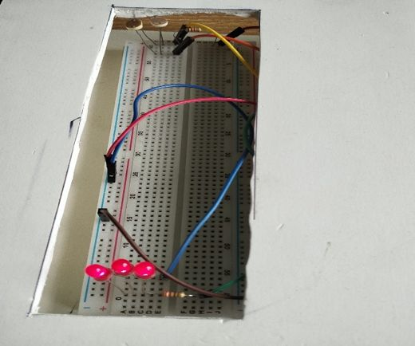

I am an Industrial and Production Engineering graduate of Shahjalal University of Science and Technology (SUST) in Sylhet, Bangladesh (2020–2025). My research interests include supply chain management, operations research, manufacturing optimization, lean production, data analytics and simulation.
My undergraduate thesis (2025) used a PLS-SEM approach to validate the drivers of Customer Order Decoupling Point (CODP) positioning and their impact on supply chain performance in the furniture industry. I also have three IEOM 2025 conference papers, listed on the Publications page.
My research interests span four connected areas:
- 📦 Supply Chain Management & CODP Positioning: Researching Customer Order Decoupling Point (CODP) placement strategies and their empirical effects on supply chain performance outcomes across manufacturing sectors.
- ⚙️ Operations Research & Manufacturing Optimization: Formulating bi-objective and multi-objective optimization models for real-world task allocation and capacity planning problems in industrial production lines.
- 🏭 Manufacturing Systems & Lean Production: Applying lean tools, takt-time analysis and activity sampling to improve production-line efficiency and reduce operational waste.
- 📊 Data Analytics & Simulation for Decision Support: Using discrete-event simulation (Arena) and data-driven modeling (PLS-SEM) to support decision-making in production, service and healthcare operational systems.
Explore My Work

Technical & Analytical Skills
Data Analysis & Statistics
Simulation
Engineering Software
Office & Presentation Tools
Managerial Skills
Feel free to email me at afzal.ipe.sust@gmail.com if you are interested in collaboration.